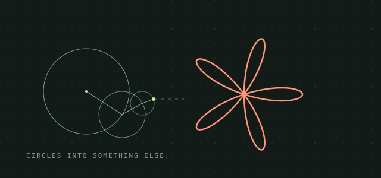

EXPERIMENT 01 LIVE DEMOFourier Pattern Studio
Orbit
Turn your drawings and images into moving mathematics. Explore 24 shapes, fine-tune the circles, and export your own video.
Play with OrbitA COLLECTION OF WEB EXPERIMENTS
Small experiments. Open to explore.
Try something, make it yours.

EXPERIMENT 01 LIVE DEMOFourier Pattern Studio
Turn your drawings and images into moving mathematics. Explore 24 shapes, fine-tune the circles, and export your own video.
Play with Orbit